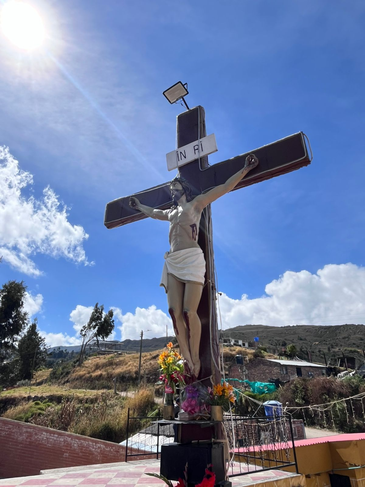

El Cerro de la Cumbre es uno de los miradores naturales y centros de peregrinación más importantes del municipio de Aquitania. Su ascenso está catalogado en el rango de Paseo por el Pueblo (Dificultad: Fácil), lo que lo convierte en una opción ideal para familias, entusiastas del senderismo suave y viajeros que desean una experiencia paisajística de primer nivel sin someterse a una exigencia física extrema. Desde su cima, se obtiene una de las panorámicas más limpias, simétricas y espectaculares del casco urbano de Aquitania, los extensos cultivos de cebolla junca y la imponente majestuosidad del Lago de Tota.
Para los viajeros que planifican su itinerario, es indispensable conocer las métricas reales del recorrido: el ascenso inicia en el casco urbano de Aquitania a aproximadamente 3.015 m.s.n.m. y llega hasta la cúspide del Santuario a cerca de 3.120 m.s.n.m., lo que representa un desnivel positivo de entre 100 y 105 metros; la distancia total es de aproximadamente 600 metros desde el inicio del sendero peatonal hasta la cima, con un tiempo estimado de ascenso entre 20 y 30 minutos a ritmo pausado, ideal para la aclimatación a la altura; además, a diferencia de las zonas altas del páramo circundante, el Cerro de la Cumbre cuenta con un microclima más estable debido a su proximidad al espejo de agua del Lago de Tota, el cual actúa como termorregulador, por esta razón la densidad de la neblina es mínima durante la mayor parte del día y garantiza una visibilidad del 95% para la captura de fotografías panorámicas y el avistamiento de la cuenca del lago
El acceso al cerro ha sido intervenido positivamente para garantizar un turismo accesible y seguro: el sendero está completamente señalizado y adecuado mediante un sistema de escaleras estructuradas en ladrillo macizo y piedra local, obra civil que no solo previene la erosión del terreno provocada por las lluvias sino que elimina por completo el riesgo de pérdida de ruta o desprendimientos de tierra, haciendo que el calzado deportivo convencional sea suficiente para el ascenso; al encontrarse integrado de forma perimetral al casco urbano de Aquitania el acceso es público y seguro, sin embargo por ordenamiento logístico y para aprovechar la mejor iluminación solar sobre el Lago de Tota evitando el contraluz de la tarde se recomienda realizar el ascenso entre las 6:00 a.m. y las 4:00 p.m.; y al ser un terreno con escalones continuos a más de 3.000 metros de altitud el esfuerzo es cardiovascular moderado, por lo que se sugiere a los turistas realizar paradas breves en los descansos del sendero para evitar la hipoxia leve o mareo por altura e hidratarse constantemente con pequeños sorbos de agua.
Este espacio condensa la memoria colectiva y la economía de la "Capital Cebollera de Colombia": el cerro está coronado por un monumento y capilla dedicados al Señor de los Milagros, lugar que es el epicentro de la fe católica del municipio y donde durante la Semana Santa y las festividades patronales el sendero del Vía Crucis, representado en las estaciones que flanquean las escaleras, se convierte en el escenario de peregrinación más importante de la provincia de Sugamuxi; desde la perspectiva de la geografía humana el ascenso ofrece un mirador vivo hacia el sistema de minifundios y el visitante puede observar detalladamente la arquitectura de los cultivos de cebolla junca o larga Allium fistulosum, caracterizados por terrazas perfectamente delineadas y sistemas de riego tradicional que cubren las laderas despidiendo el aroma aceitoso y fresco característico de la región; y en la cima, el ángulo de visión de 180 grados permite identificar la configuración urbana de Aquitania con su emblemática parroquia Nuestro Señor de los Milagros y la inmensidad del Lago de Tota, el cuerpo de agua dulce más grande de Colombia y el segundo más alto de Suramérica.
CREADO POR YULEY PESCA 🥾